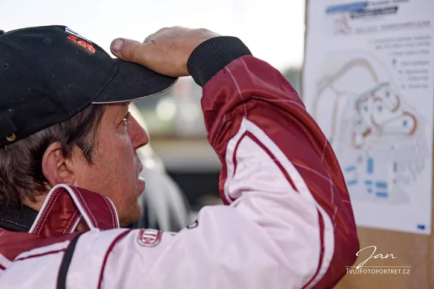

01 / 04
Portrétní fotografie
Fotím rodiče s dětmi, budoucí maminky, zamilované páry, prarodiče i osobnosti ze sportu nebo kultury. Klidně i jen tak, pro radost, v ateliéru nebo venku.
Zeptat se na termín→


Portréty, které nikdy nejsou stejné
Zeptat se na termín →(01) Ahoj
Jmenuji se Honza Bobek a nejraději fotím portréty lidí . Fotím rodiny, páry, svatby i business portréty , v ateliéru v Jizerním Vtelně, venku nebo na akcích a závodech . Při focení nespěchám, a to je pak na fotkách vidět.
(02) Co fotím
01 / 04
Fotím rodiče s dětmi, budoucí maminky, zamilované páry, prarodiče i osobnosti ze sportu nebo kultury. Klidně i jen tak, pro radost, v ateliéru nebo venku.
Zeptat se na termín→02 / 04
Fotím od svatebních příprav přes obřad až po hostinu. Rád vás vezmu na zámek Stránov, kde to známe jako vlastní dům.
Zeptat se na termín→03 / 04
Pracovní portréty pro web, billboard, tiskové materiály, CV nebo LinkedIn. Než začneme fotit, společně si ujasníme, jak má portrét vyznít.
Zeptat se na termín→Dále nabízím
Sportovní utkání, závody, vystoupení se zvířaty, koncerty, vernisáže a plesy. Prostě společenské akce, které stojí za to zachovat.
↗(03) Portfolio
Kliknutím fotku zvětšíte · fotografie jsou ilustrační
(04) Postup
Od první zprávy po hotovou galerii.
Krok 1 z 4
Zavolejte nebo napište, o jaký druh focení máte zájem a jaký termín by se vám hodil. Na komplexnější focení připravím kalkulaci na míru.
Krok 2 z 4
Vybereme místo: ateliér v Jizerním Vtelně, venkovní prostředí nebo zámek Stránov. U business portrétu si nejdřív ujasníme, jak má výsledný portrét vyznít.
Krok 3 z 4
Fotíme v klidu a bez spěchu. Portrét v ateliéru trvá 30 až 60 minut, venkovní focení zhruba hodinu.
Krok 4 z 4
Dostanete retušované fotografie. Když budete chtít, vytiskneme je jako fotoobraz, v rámečku nebo jako fotoknihu, případně připravíme fotovideo.
Při focení nespěchám, a je to na fotkách vidět.
(05) Za objektivem
Jsem Honza Bobek a nejraději fotím portréty lidí. Potkávám se s nimi v nejrůznějších životních situacích, což je někdy hodně náročné. Naštěstí na to nejsem sám, hodně mi pomáhá moje manželka Simča.
Baví mě, že portrét můžu dělat znovu a znovu a nikdy není stejný. Mění se a roste spolu s tím, koho fotím. Proto nespěchám. Focení mě baví a snažím se tu pohodu přenést i na vás.
Jsme z Jizerního Vtelna, kde máme fotoateliér v klidném prostředí, a přímo u nás v obci stojí zámek Stránov. Kancelář najdete v Mladé Boleslavi. A když fotíte rádi i vy, na semináři vás naučím všechno od základů až po pokročilé techniky.
Jan
Jan Bobek · Portrétní a svatební fotograf
Ateliérový portrét stojí 2 000 Kč, trvá 30 až 60 minut a obsahuje 10 retušovaných fotografií, každá další je za 120 Kč. Venkovní portrét stojí 2 500 Kč + 5 Kč/km. Ceny jsou uvedené bez DPH.
Fotoateliér máme v klidném prostředí v Jizerním Vtelně u Mladé Boleslavi, kancelář na třídě T. G. Masaryka 1076 v Mladé Boleslavi. Většinou jsme ale na focení, takže se prosím na schůzku domluvte předem telefonicky.
Ano, zámek Stránov dobře známe a umíme v něm najít zajímavá místa pro svatební i rodinné focení. Pomůžeme i s formalitami. Svatbu fotíme od 3 500 Kč podle rozsahu.
Ano. Fotoobraz A2 stojí 1 650 Kč, A0 2 900 Kč a fotka v zaskleném bílém rámečku 1 500 Kč. Při tisku dvou a více fotografií máte slevu 20 % a doprava v okolí Mladé Boleslavi zhruba do 10 km je v ceně.
(07) Kontakt
Napište pár vět o tom, co si představujete, a termín, který se vám hodí.